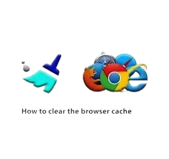

How to Speed Up Windows 11 (Practical Steps That Work)
Windows 11 is sleek, but over time it can feel sluggish — startup takes longer, apps hesitate, and your laptop fan spins like a jet engine.
Read more →Clear, hands-on tech fixes & tips for everyday users
Start Reading
Windows 11 is sleek, but over time it can feel sluggish — startup takes longer, apps hesitate, and your laptop fan spins like a jet engine.
Read more →
Over time, your browser stores temporary files (cache) and small bits of data (cookies) to make websites load faster and remember your logins.
Read more →
Windows Updates are meant to improve your PC, but sometimes they pop up at the worst moments...
Read more →